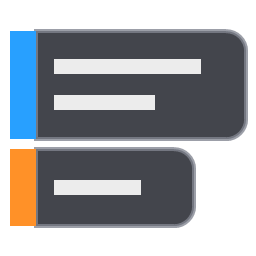

Tip Overlay
A small Windows tray app that keeps short tips on screen: notes, reminders, shortcuts, anything you want in view while you work.
What it does
- Each tip is a borderless, semi-transparent window that stays on top of other windows.
- Mouse clicks pass straight through a tip, so it never gets in the way.
- A slim colored bar on the left of each tip lets you drag it, edit it or delete it.
- Dragged tips snap to each other and move together as a group.
- Tips are saved automatically on your PC.
Sync with Google Tasks (optional)
If you sign in with Google, Tip Overlay keeps your tips in sync with one Google Tasks list, named Tip by default:
- Tasks in that list appear as tips on your screen. A task's title and notes become the tip's text.
- Tips you add or edit in Tip Overlay are saved to that list.
- Deleting a tip marks its task completed. Completing a task in Google Tasks removes the tip.
Tip Overlay talks to Google directly from your PC. There is no Tip Overlay server, and your tasks are never sent anywhere else. See the privacy policy for details.
Requirements
Windows 10 or 11.